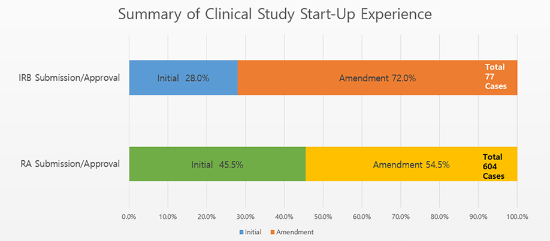
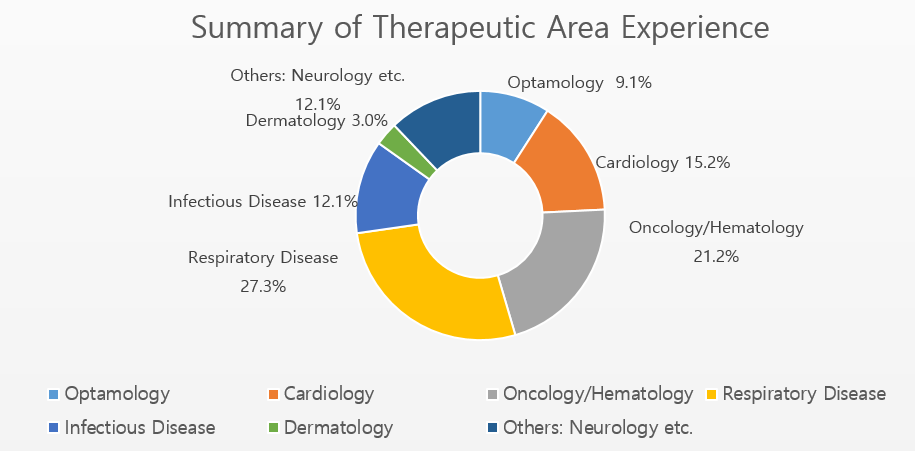
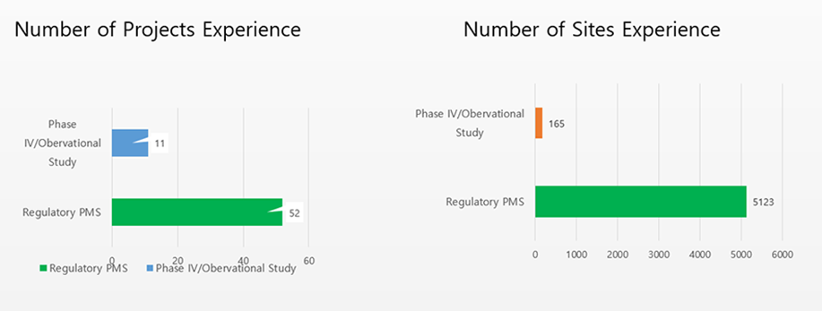

Management Expertise in Clinical Research
We have almost 16 years experiences in Clinical Research. 10 years in pharma and biotech companies and 6 years in CROs.Extensive knowledge of regulatory framework, best KOLs and sites across the region.Our experience in Asia pacific following regions - Korea, Singapore, Hong Kong, Thailand, India, Taiwan, China, Malaysia.  
Regulatory PMS and Phase IV/Observational Studies Experience
Summary of Our Clinical Research Expertise
Internal Medicine
Infectious Disease
Hepatitis B/C
Severe Community-Acquired Pneumonia
Nosocomial Pneumonia
Metabolic Syndrome/Hypercholesterolemia
Oncology
CML, Breast Cancer
Hepatocellular Cancer
Pancreatic Cancer
Prostatic Cancer
Colorectal Cancer
Gastric Cancer
Thyroid Cancer
Ophthalmology
Wet AMD
Dermatology
psoriasis
Rheumatology
Rheumatoid Arthritis
Respiratory
COPD/Asthma, Tuberculosis
Cardiology
Congestive Heart Failure
Pulmonary Hypertension
Hypertension
Heart Transplantation
Coronary Bypass
Acute Myocardial Infarction
Mitral/tricuspid Valve Replacement Surgery
Aortic Dissection
Patent Ductus Arteriosus
Peritoneal Dialysis